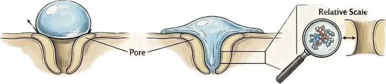
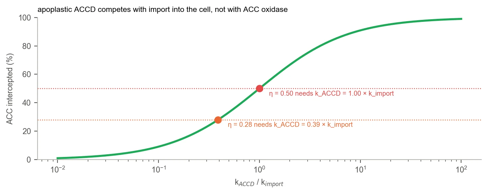
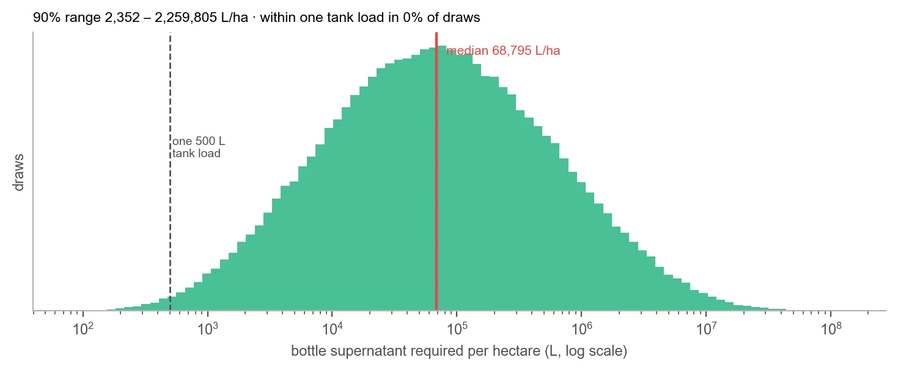
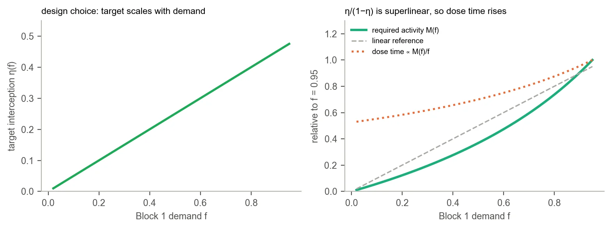

What the model does
Abiotic stress (heat, soil salinity, and vapor pressure deficit) reduces crop yields across Taiwan's farmland long before visible damage appears, by disrupting plant hormone balance and protein stability at the cellular level. ReLeaf addresses this by deploying an optogenetically controlled B. subtilis bioreactor that senses field stress in real time and produces tailored protectant proteins. Our mathematical model asks the question that connects every part of that system: given today's stress conditions in a Taiwanese farm field, how much engineered protectant actually reaches the plant?
Answering that means crossing three physically distinct domains, and no single equation spans all of them. So the model is three blocks run as one chain. Each block takes one quantity from the block before it, and hands one quantity to the block after it.
| Block | Question | Takes | Gives | Standing on |
|---|---|---|---|---|
| 1 · Stress index | How much is this field losing, and how much of that can ACC deaminase reach? | Weather by growth stage | Stress index S, addressable share Saddr, demand f | Ours 25 years of county harvests |
| 2 · Optogenetic kinetics | What lamp setting does that demand mean, how fast does the reactor answer, and how much enzyme comes out? | Demand f | Lamp PPFD, response horizon, activity in mU mL−1 | Ours DNPH assay, Literature CcaSR transfer function |
| 3 · Protectant delivery | How much of that activity reaches the leaf apoplast and intercepts ACC? | Activity, target interception | Spray volume, interception fraction η | Literature cuticle, stomata and pH data |
![Three panels under the title From Environmental Stress to Targeted Foliar AccD Delivery. Block 1, environment to stress prediction, shows a sensor in a field with temperature, conductivity and vapour pressure deficit, and a stage-weighted anomaly model. Block 2, engineered cell to AccD production, shows a reactor under green and red light with the CcaS and CcaR proteins and a Hill light response. Block 3, concentration to foliar delivery, shows the reactor feeding a bottle and a sprayer onto a leaf, with the delivered-dose equations. A strip at the bottom runs weather to anomaly to PPFD to AccD activity to spray volume to delivered dose.](../assets/img/model/three-blocks-overview.webp)
Three things that used to be on this page are not in these blocks. Growth of the culture in the vessel, transport of a root-zone protectant through soil, and the deployment arithmetic for Taiwan's 346 farming townships. The first two were folded into the blocks that use them; the geography is on Geospatial Analysis, where the parcel and road data it rests on is documented.
Block 1 · Stress index
Our bioreactor makes a crop protectant only when its green lamp is on. So the whole system depends on one number: how stressed is the crop right now?
Most crop stress indices add temperature, water and light with weights chosen by experts, and are rarely checked against what happened in the field. We took a different route: let Taiwan's own harvests decide. The Agriculture and Food Agency (農粮署) has published county rice yields for every season since 2001. A season whose yield fell below its trend was a stressed season. If weather alone can predict which seasons fall, and by how much, that prediction is a stress index, and every harvest becomes a test of it.

| Question | Answered in | |
|---|---|---|
| Q1 | Which weather actually costs Taiwanese rice? | Variable selection |
| Q2 | What is the model, and what does its stress index mean in rice and in money? | Our model |
| Q3 | Does it accurately predict the 2026 first season? | Validation |
Assumptions
| # | Assumption | Why? |
|---|---|---|
| 1 | A county's yield trend reflects technology and management; the deviation from it reflects weather. | Varieties and practices change slowly; weather changes every season. |
| 2 | The same weather stress causes more damage at some growth stages than others. | Rice sensitivity is stage-specific (e.g. cold at heading, rain at tillering). |
| 3 | Stress can only reduce yield, and only after it passes a threshold. | Physical damage is one-sided: a calm day does not add rice. |
| 4 | The two rice crops respond differently to weather and should be modeled separately. | Different seasons, weather and stresses. |
| 5 | The value of lost rice can be estimated using the current farm-gate price. | Official daily price exists; public purchase price is close. |
Result 1 · Variable selection
We gathered 18 candidate stresses. For each crop, every one of the 215 − 1 = 32,767 combinations of 15 candidates was fitted and scored on years it had not seen. Each candidate was then judged three ways:
First, by how much the out-of-sample error moved when it was added, averaged over every model it could enter. Second, by how often it helped at all: the percentages on Figure 3 are the share of the 16,384 subsets of the other fourteen variables in which adding this one lowered the error, so 100% means it helped in every model and 50% means a coin flip. Third, by a permutation test, which breaks the link between the variable and the harvest by shuffling it and asks what that costs.
![Two horizontal bar charts, second crop on the left and first crop on the right, ranking fifteen candidate weather stresses by the mean change in prediction error when the variable is added. For the second crop, rain by five stages and typhoon wind are furthest to the left and green; for the first crop, sunshine potential, dark spell and light deficit lead. Grey bars are dropped variables, and minimum and maximum temperature by stage sit at the bottom of the first crop with bars to the right, meaning they hurt.](../assets/img/model/stress-variable-leaderboard.webp)

Which stresses were supported by the data. After testing each candidate stress with three different methods, these were the variables that consistently improved the model and were kept in the final version.
| Crop | Kept | Dropped despite being proposed |
|---|---|---|
| Second (二期) | Rain by growth stage, typhoon wind, light deficit, sunshine potential, heavy-rain days ≥ 150 mm, lodging gusts, cold hours at heading | Humidity, minimum and mean temperature by stage, warm nights, hours ≥ 35 °C |
| First (一期) | Sunshine potential, dark spell, light deficit, humidity by growth stage, humid days, warm nights, hours ≥ 35 °C | Wet-day runs, early storm rain, seedling cold, heavy-rain days, rain by stage, mean and minimum temperature by stage |
Hours ≥ 35 °C helps in 0% of first-crop models and 45% of second-crop ones, and shuffling it costs nothing in either. Taiwan's hottest hours and its warm nights are the stresses a greenhouse experiment would put first, and on twenty-five years of harvests they earn almost nothing. What does cost rice is light (dark spells and radiation deficit), wind (typhoon and lodging gusts) and water in the wrong week.
Result 2 · Our model
One equation predicts county yields, and its damage half is the stress index. Each index value has a price in kilograms and New Taiwan dollars.


What does the stress index mean?
The stress index S is the damage side of the model (Methods, eq. 2). Its meaning comes from history: for every county-season since 2001 we know its index (computed without that year) and the real harvest. Grouping seasons by index gives the typical outcome at each level.

| First-crop index | Band | Typical vs normal year | kg/ha | NT$/ha | Chance of losing > 5% |
|---|---|---|---|---|---|
| 0.05 | none | +5.7% | +422 | +10,858 | 2% |
| 0.10 | none | +1.5% | +109 | +2,802 | 12% |
| 0.15 | mild | +0.0% | +1 | +17 | 25% |
| 0.20 | mild | −1.8% | −129 | −3,311 | 35% |
| 0.25 | mild | −1.8% | −129 | −3,311 | 25% |
| 0.30 | mild | −3.4% | −252 | −6,487 | 32% |
| 0.35 | moderate | −4.0% | −293 | −7,539 | 45% |
At the recent typical first-crop trend yield (7,354 kg/ha) and the official 2026 farm-gate price (NT$25.7/kg). Second crop: a normal year sits near 0.33; −5% at 0.5, −9% at 0.6, −15% at 0.8. The same number means different things in the two crops, so the index is always reported with its crop.
The table is a lookup, not a curve: each row averages the past county-seasons whose index was within ± 0.05 of it, around forty of them (37 at the index in Figure 8, 51 in Figure 9), so the last column does not have to fall smoothly and does not. The first three rows are positive because a first crop with almost no weather damage beats its own trend, not because stress helps.


ACCD efficacy measured by our wet lab: salinity in rice
Efficacy is the share of the yield a stress costs that ACC deaminase could save: 1 means all of it, 0 means none. The values in Figure 11 come from the literature. Our wet lab measured the first one directly, for salinity, in Arabidopsis (experiment #9: buffer or ACCD given one day before, together with, or one day after 0, 75 or 100 mM NaCl; 15 days on agar). We then carried the result to rice grain yield with published rice studies.
| Arabidopsis, 75 mM NaCl | Fresh weight (g) | Change under salt (vs same treatment, 0 mM) | vs buffer at 75 mM |
|---|---|---|---|
| Buffer (control) | 0.064 | −51% | — |
| ACCD before salt | 0.164 | +35% | +158% |
| ACCD with salt | 0.144 | −34% | +127% |
| ACCD after salt | 0.141 | +42% | +122% |

That 0.58 does two jobs, and only the first is measured. The measured part is the comparison at 75 mM, where every ACCD group outweighs buffer by more than a factor of two. The modelled part is the step from Arabidopsis seedling fresh weight on agar to rice grain yield in a paddy, which runs through published rice work this draft has not yet named. Until it does, 0.58 is the number the efficacy-weighted index Saddr is built on and the largest single assumption in Block 1.
Result 3 · Validation
Every test asks the same question, how far off is the predicted county yield, but closes a different loophole. The reference is the trend: each county's yield trend with no weather at all, the "no skill" line any weather model must beat.
![Island mean first-crop paddy yield from 2001 to 2026 in black, rising from 5,850 to about 7,350 kilograms per hectare with large year to year swings. A green model line and a dotted grey trend line, both predicted from earlier years only, follow it from 2008. Below, a bar chart of island error per cent shows the green model bars shorter than the grey trend bars in the bad years 2013, 2018 and 2022. A 2026 forecast of 7,644 kilograms per hectare frozen on 26 September is marked at the right with an error bar.](../assets/img/model/stress-validation-island.webp)
![Left: frozen forecast against official 2026 first-crop yield for four counties, with eighty per cent intervals, scattered around the one to one line; Taichung and Pingtung sit on it, Taitung and Hualien off it; the overall error is 533 kilograms per hectare or 7.9 per cent. Right: yield versus trend against the 2026 first-crop stress index, with the historical typical-outcome line and band, and the four counties as red triangles; Taichung falls on the line, Taitung below it and Hualien and Pingtung far above.](../assets/img/model/stress-blind-2026.webp)
| Test | Loophole it closes | Result |
|---|---|---|
| Leave-one-year-out | A model cannot see the year it is being scored on, so it cannot learn that year's weather. | 32% less county error than the trend in the second crop, 8% in the first. |
| Forward-only (Figure 11) | Each year is predicted from earlier years alone, so no later season leaks backwards through the fit. | 2016–2025 county error 365 kg/ha against the trend's 419. |
| Frozen 2026 forecast | Nothing about 2026 existed when the forecast was written, including the choice of variables. | 4 of 16 counties published: 7.9% error, trend 8.8%. Still running. |
Methods
The draft carries these equations only inside the block diagram in Figure 1. They are transcribed here. A county-season's weather enters as stage-weighted exposures: a daily variable is spread across growth stages by the probability that day fell in each stage, so a wet week counts differently at tillering and at grain fill.
Coefficients are not tabulated in the draft. Figure 5 reports every term's effect in kg/ha with a bootstrap interval, which is the same information in the units a reader can use, but the raw βj and bi are not yet written down anywhere.
Conclusion
Light shortage, typhoon wind and lodging, and water (heavy rain, rain at tilling). Heat and warm nights barely register.
One equation per crop; its damage half is the stress index. First crop: 0.15 is a normal year, 0.35 has meant ≈ −4%, −290 kg/ha, −NT$7,500/ha.
Yes: 32% less error than the trend (second crop), 8% (first crop), under the strictest test; most of the gain is in bad seasons. A real blind test (2026) is under way: 4 of 16 counties published, county error 7.9% (trend 8.8%).
Block 2 · Optogenetic kinetics
The reactor holds Bacillus subtilis WB800 carrying the cyanobacterial CcaSR two-component system. Green light at 535 nm activates the sensor kinase CcaS, which phosphorylates CcaR. CcaR~P activates the PcpcG2 promoter, transcribing acdS fused to a secretion signal peptide. The Sec translocon exports the enzyme and cleaves the signal peptide, leaving active ACC deaminase in the culture supernatant.
![A schematic of a Bacillus subtilis WB800 cell. Green 535 nanometre light drives the membrane sensor CcaS, which carries a phycocyanobilin chromophore needing ho1 and pcyA; red 672 nanometre light reverses it. CcaS phosphorylates CcaR, and CcaR~P activates the P_cpcG2 promoter driving a signal peptide fused to acdS. The ribosome makes pre-ACCD, the Sec translocon exports it and cleaves the signal peptide, leaving active ACC deaminase outside. A line at the bottom reads measured at this point: samyQ 7.25, csn 3.31 below detection, WB800 host zero.](../assets/img/model/ccasr-secretion-pathway.webp)
| Question | Answered in | |
|---|---|---|
| Q1 | What light intensity corresponds to a given stress demand? | Light setpoint |
| Q2 | How long after switching the lamp on is protectant available? | Response time |
| Q3 | How much active enzyme does the reactor produce? | Reactor output |
Assumptions
| # | Assumption | Basis |
|---|---|---|
| B1 | The construct supplies phycocyanobilin. | CcaS is a bilin-binding photoreceptor. B. subtilis does not synthesise PCB, so Castillo-Hair co-expressed ho1 and pcyA alongside the sensor. |
| B2 | The CcaSR transfer function measured on a fluorescent reporter also describes acdS transcription. | Same promoter, same sensor, same host. |
| B3 | Activity in the supernatant is proportional to correctly folded, secreted enzyme. | The assay measures α-ketobutyrate, produced 1:1 with ACC cleaved, so it reports catalytic activity rather than protein mass. |
Result 1 · Light setpoint
The measured transfer function. Castillo-Hair et al. (2019) characterised CcaSR in B. subtilis and fitted the steady-state response to a Hill function with half-maximal intensity K½ = 4.66 ± 0.63 µmol m−2 s−1 and Hill coefficient n = 1.88 ± 0.16, over a dynamic range exceeding 70-fold. The same system in E. coli gives K½ = 1.075 and n = 2.737, so the parameters are host-specific and the B. subtilis values are the correct ones here.

Inversion. Block 1 produces addressable stress Saddr and converts it to a demand f between 0 and 1. The lamp setpoint is the light intensity that drives promoter output to that fraction of maximum:

| Demand | PPFD (µmol m−2 s−1) | Illuminance (lux) |
|---|---|---|
| 0.05 | 0.97 | 121 |
| 0.1 | 1.45 | 180 |
| 0.25 | 2.6 | 322 |
| 0.5 | 4.66 | 578 |
| 0.75 | 8.36 | 1,037 |
| 0.9 | 15.00 | 1,859 |
The lux conversion uses photon energy at 526 nm (3.78 × 10−19 J, or 0.228 J µmol−1) and the photopic luminous efficacy at that wavelength (683 × 0.80 = 546 lm W−1), giving 124 lux per µmol m−2 s−1. Both quantities are per unit area, so no area term enters. The ceiling saturates the promoter at f = 0.94, so demands above that are indistinguishable to the reactor.
Result 2 · Response time
![Four panels. Top left, output rising to half of final 105 minutes after the lamp goes on. Top right, output falling to half 75 minutes after it goes off. Bottom left, a stacked bar of the 7.3 hour horizon: 1.8 hours transcription lag, 2 hours accumulation, 0.5 hours harvest and load, a sliver for spraying, and 3 hours stomatal uptake. Bottom right, dose time against demand under three assumptions: flat at two hours if required mass scales with demand, rising linearly if it scales with the square, and falling steeply if the required mass is fixed.](../assets/img/model/ccasr-response-kinetics.webp)
| Step | Hours | Source |
|---|---|---|
| Transcription lag (to half-max) | 1.8 | CcaSR reporter kinetics Literature |
| Accumulate required amount | 2 | Assumed placeholder, see Numbers to reconcile |
| Harvest, concentrate, load | 0.5 | Block 3 Design |
| Spray | 0.1 | Knapsack application Design |
| Stomatal uptake into apoplast | 3 | Surfactant-assisted uptake Literature |
| Total H | 7.3 | Reactor alone would be 4.2 h |
Two numbers out of that table matter more than the total. Activation takes 105 min to half-maximum and deactivation only 75, so the reactor commits to a batch before it can confirm the stress was real. And uptake into the leaf is 3 of the 7.3 hours, 41% of the horizon, in a step that happens after the enzyme has left our hardware. Neither can be engineered away, so the controller has to be fed a forecast.
Result 3 · Reactor output
Measured activity. ACC deaminase activity was measured by DNPH colorimetry on culture supernatant. The enzyme converts ACC to α-ketobutyrate and ammonia in 1:1 stoichiometry, so α-ketobutyrate production equals ACC cleaved. Reaction conditions were 43.0 mM ACC, pH 8.0, 30 °C, 30 min, with the WB800 host supernatant as blank.

| Construct | A540 | OD600 | Activity (mU mL−1) | Per OD600 | Status |
|---|---|---|---|---|---|
| WB800 host | 0.388 | 3.322 | 0 | — | Blank by definition |
| csn | 0.404 | 2.638 | 3.31 | 1.25 | Below LOD |
| samyQ | 0.423 | 3.058 | 7.25 | 2.37 | Detected, below LOQ |
Signal is not a biomass artefact. WB800 has the highest OD600 and the second-highest absorbance; samyQ has lower biomass and higher signal. A background from cell density or secreted carbonyl metabolites would produce matching ranks. This argument is independent of the standard curve and survives any calibration error.
Every number downstream of here inherits this assay, so its limits travel with them. One replicate, one day, one culture. samyQ clears the detection limit and does not clear the quantitation limit, so the correct reading is secretion detected, titre not yet quantified. The rank order (samyQ > csn > host) is what survives any calibration error; 7.25 is a provisional point estimate, and Block 3's dose budget is built on it.
Calibration correction. The standard-curve concentrations were originally computed against a 110 µL reaction volume while the actual standard volume was 160.6 µL. Correcting this reduces every derived activity by a factor of 1.460.

Implied enzyme concentration. Substrate was 43.0 mM against a Km of 3.4 mM, so the assay ran at 93% of Vmax. Correcting to Vmax = 7.82 mU mL−1 and applying kcat = 146 min−1 (P. putida UW4) gives a secreted enzyme concentration of 54 nM, or 1.96 mg L−1.
Accumulation. Enzyme accumulates while the lamp runs and decays in the medium, so banked activity saturates at production rate × mean lifetime. Running the reactor longer past that point adds nothing.

Culture reached OD600 3.06. At a doubling time of 29 min in LB at 37 °C, that is about 5.9 doublings from a 1:100 inoculum, or 4 to 6 h including the approach to stationary phase. Batch duration was not recorded, so the production rate is inferred rather than measured.
Conclusion
Control is useful between f = 0.015 and 0.94. Below that the lamp floor takes over, above it the promoter saturates.
105 min to half-maximal transcription, about 7.3 h from decision to enzyme active in the leaf. Uptake is 41% of that. The controller must act on forecast stress.
7.25 mU mL−1 with the samyQ signal peptide, equivalent to 1.96 mg L−1. Below the published range for B. subtilis secretion.
Key findings
- Signal peptide selection. samyQ gives detectable secretion; csn does not. The comparison is the basis for carrying samyQ forward.
- Controller bounds. The lamp ceiling saturates the promoter at f = 0.94, defining the upper limit of useful control.
- Forecast requirement. A 7.3 h decision-to-protection time makes reactive control structurally late, which is why Block 1 supplies a forward index.
- Titre as the bottleneck. The measured 1.96 mg L−1 is below the published range and propagates directly into the Block 3 dose budget.
Block 3 · Protectant delivery
Under waterlogging, ACC is synthesised in oxygen-starved roots and carried to the shoot in the xylem, where delivery rises about threefold within a day of flooding. In the leaf it is imported into cells by LHT1 and converted to ethylene by cytosolic ACC oxidase. Our enzyme must reach the apoplast and cleave ACC before that import occurs.
Block 2 ends at the reactor outlet. Block 3 covers concentration, spraying, uptake and catalysis, and returns the interception fraction η that Block 1 uses as its efficacy coefficient.
Assumptions
| Assumption | Basis | What would break it |
|---|---|---|
| The target is ACC in the leaf apoplast, intercepted before import into the cell. | ACC arrives from the roots via the xylem and must be imported by LHT1 to reach cytosolic ACC oxidase. An apoplastic enzyme acts on it in transit. | Apoplastic ACC oxidase activity, which is reported in some tissues, would convert ACC without import and remove the interception window. |
| Entry is stomatal, and competes with destruction on the leaf surface. | Cuticular pores are 4 to 5 nm against a 9.4 nm enzyme. Surfactant-driven mass flow through open stomata is the documented route for foliar uptake. | A cuticle-penetrating carrier, or stomatal closure during the stress being treated. |
| Supernatant activity measured at pH 8.0 and 30 °C transfers to the apoplast after pH and temperature derating. | The pH response is modelled as a two-ionisable-group curve anchored on the published optimum of 8.5 and loss of activity below 7.0. | A different pH profile for our enzyme, which is unmeasured, moves the answer by about 8×. |
Result 1 · The spray
From bottle to tank. Total activity per hectare is conserved through dilution. What ultrafiltration changes is whether that activity fits in a sprayer. At the measured titre a hectare needs about 3,757 U of ACC deaminase, which is 68,795 L of bottle supernatant without a concentration step.
Droplets and coverage. A spray deposits discrete droplets, not a film. At 300 L/ha with 150 µm droplets spreading threefold on impact, a hectare receives about 170 × 109 droplets, each covering 0.16 mm2. Allowing for overlap, that wets 42% of a canopy at leaf area index 5.

The wet window. Stomatal infiltration is driven by mass flow and only proceeds while liquid is present. Enzyme still on the surface when the droplet dries is stranded. Three processes therefore compete from the moment a droplet lands: entry, UV destruction, and drying.

| Condition | Wet window | Enters the apoplast |
|---|---|---|
| Unprotected, fast drying | 5 min | 27% |
| Encapsulated, humectant | 30 min | 79% |
The formulation is worth as much as the biology here. Holding the droplet wet for half an hour instead of five minutes triples what gets in, and it is the one lever in this block that needs no new construct, only a humectant and an encapsulant in the tank.
Result 2 · Getting in
The cuticle is closed. A spray on the cuticle is wasted. Cuticular aqueous pores are 4 to 5 nm across, and diffusion through them falls sharply with molecular size: ions up to about 800 g/mol pass, while molecules above roughly 14 kDa stay on the surface. ACC deaminase is a 36.5 kDa subunit that assembles into an active multimer, so it is well outside that range.

The stomata. Rice carries 187 stomata per mm2 on the upper leaf surface and 621 on the lower. At the stoma, size is not the constraint: the pore is hundreds of times wider than the enzyme. What excludes liquid is surface tension, which is why an organosilicone surfactant rather than a smaller molecule is the relevant intervention.



Result 3 · Inside the plant
The pH gate. ACC deaminase has an optimum at pH 8.5 and no measurable activity below pH 7.0. Our assay ran at pH 8.0, so every environment is quoted relative to the assay rather than to the peak.

| Environment | pH | Activity vs assay | Verdict |
|---|---|---|---|
| Leaf surface film | 5.0–6.5 | 2% | Inactive; surface deposit does no work |
| Apoplast, unstressed | 5.5–6.5 | 3% | Inactive |
| Rhizosphere | 5.5–6.5 | 3% | Inactive; roots acidify their surroundings |
| Flooded paddy water | 6.5–7.5 | 23% | Active but diluted into 500–1,000 m3/ha |
| Apoplast, stressed | 6.5–7.5 | 23% | The operating target |
Everywhere the enzyme might end up by accident (a leaf surface, the soil, an unstressed leaf) sits below pH 7 and runs at 2 to 3% of assay activity. The one place it works is the apoplast of a plant that is already stressed, which alkalinises as part of the stress response. The protectant is gated by the condition it treats, and nobody designed that in: it falls out of the enzyme's own pH curve.
What it competes with. ACC oxidase is cytosolic and nuclear. Apoplastic ACC deaminase does not compete with it directly; it competes with LHT1-mediated import of ACC into the cell. Under continuous ACC arrival the apoplast reaches a steady state and the intercepted fraction is

Neat supernatant gives ACC a half-life of 5.0 h at assay pH. The apoplastic residence time of ACC, which sets kimport, has not been measured. It is scanned from 30 to 240 min and is the second-largest source of uncertainty in the budget.
Result 4 · Dosage
A hectare needs about 68,795 L of bottle supernatant at the measured titre. Ultrafiltration is the single largest lever and the only one in the top three we control directly.

What decides the amount?


Required activity rises about 1.9× faster than demand across the operating range. Block 2 concluded that dose time is flat under a linear requirement; with this superlinear relation it rises by roughly 89% from low to high demand. That resolves the question of whether the horizon should depend on stress severity: it should, modestly.
The reason is in equation (8). Required activity scales with η/(1 − η), and if the interception target is set proportional to demand, that ratio curves upward as η climbs. A reactor answering a severe forecast therefore needs a longer run than a linear reading of Block 2 suggests, and the controller's horizon should carry the severity with it.
Conclusion
| Question | Answer |
|---|---|
| Can it get in? | Only through stomata, and only while the droplet is wet. 18% of deposited enzyme reaches the apoplast; coverage then caps canopy-average interception. |
| Does it work once inside? | In the stressed apoplast it retains 23% of assay activity. It is near-inactive on an unstressed leaf, so protection is gated by the stress itself. |
| What does it compete with? | LHT1 import into the cell, not ACC oxidase. Reaching η = 0.28 requires cleavage at 0.39 times the import rate. |
| Is there enough? | 68,795 L of bottle supernatant per hectare at the measured titre. Ultrafiltration spans most of the gap and is the leading sensitivity. |
What the model changed
Four results did not stay on this page. One changed the construct, one the controller, one the hardware, and one changed what the index is looking for.
Block 2's activity assay is the only side-by-side comparison of the two signal peptides. samyQ clears detection at 7.25 mU mL−1, csn does not clear it at all, and that comparison is why samyQ is the construct carried forward.
7.3 hours from decision to enzyme active in the leaf, of which the reactor owns only 4.2. A controller reacting to today's sensor reading would always be late, so Block 1 was built around a three-day forecast.
At the measured titre the dose does not fit in a sprayer by three orders of magnitude, and the tornado in Figure 29 puts concentration factor at the top with a 50× span. A membrane step moved from optional to required, and it is the one place extra engineering buys the most.
The project was framed around heat and salinity. Twenty-five years of harvests say Taiwanese rice loses yield to light, wind and badly timed water, and that hours above 35 °C earn nothing in either crop. The index follows the data; the salinity arm stays because that is the stress ACC deaminase addresses.
Numbers to reconcile
Three blocks written separately do not yet agree everywhere. Each one below is a specific thing to go and check, so they are listed here and not smoothed over.
- The dose budget does not close. Block 3 says a hectare needs 3,757 U and that this is 68,795 L of supernatant. At the measured 7.25 mU mL−1, 68,795 L carries about 499,000 U, which is 133 times the stated requirement. The losses quoted in the same block (42% coverage, 18% entry, 23% pH) multiply to about 1/57, not 1/133. Either the requirement is stated after a different set of losses or one factor is being applied twice.
- Two entry fractions. The wet-window table gives 27% unprotected and 79% encapsulated; the conclusion says 18%. The 18% does not correspond to either row and needs its wet window stated.
- Tank loads. 68,795 L divided by a 500 L tank is 138 loads, not the 223 in the draft. 223 implies a 308 L load.
- Where 0.58 comes from. The Arabidopsis experiment measures fresh weight on agar; the efficacy coefficient is a share of rice grain yield saved. The published rice studies that bridge the two are referred to but not named, and the ACCD groups in that experiment gained weight under salt, which the simple "share of the loss recovered" arithmetic cannot represent.
Still unmeasured
- τdecay, the half-life of secreted activity in the medium. Three assumed values span a 30-fold range in what a reactor can bank (Figure 19). Nothing else in Block 2 is this loosely held.
- The accumulation step, 2 h. A placeholder inside the 7.3 h horizon. It depends on the required mass, which Block 3 now says is superlinear in demand, so it is not one number.
- kimport, the apoplastic residence time of ACC. Scanned from 30 to 240 min. It sets the denominator of equation (8) and is the second-largest uncertainty in the dose.
- The pH profile of our own enzyme. Figure 26 is a two-anchor fit to published values. The draft states that a different profile moves the answer by about 8×.
- Replication of the titre. One culture, one day, below the limit of quantitation. The result is a detection, and should be quoted as one until it is repeated.
- The βj coefficients of Block 1. Figure 5 reports every term's effect in kg/ha, but the fitted coefficients themselves are not written down anywhere yet.
References
Grouped by block. Entries marked full reference needed are cited in the draft by result but not yet by paper.
Block 1 · Stress index
- Agriculture and Food Agency, Ministry of Agriculture (農粮署). County rice yield statistics, every season from 2001. The record the stress index is fitted and tested against, and the source of the realised 2026 first-crop yields.
- ERA5 daily reanalysis for the historical fit, and Central Weather Administration (中央氣象署) station data for live use. The weather inputs behind every stress term.
- Official 2026 farm-gate paddy price, NT$25.7/kg, used for every NT$ figure on this page.
- Grattan, S.R. et al. (2002) rice salt-tolerance yield response, the black line in Figure 10, with the older Maas–Hoffman guideline shown for comparison. full reference needed
- Shultana, R. et al. (2020), the 8 dS/m reference point marked on Figure 10. full reference needed
- Our wet lab: Arabidopsis salinity experiment #9, buffer or ACCD at three timings against 0, 75 and 100 mM NaCl, 15 days on agar.
Block 2 · Optogenetic kinetics
- Castillo-Hair, S.M., Baerman, E.A., Fujita, M., Igoshin, O.A., Tabor, J.J. (2019) Optogenetic control of Bacillus subtilis gene expression. Nature Communications 10:3099. doi:10.1038/s41467-019-10906-6. Source of K½ = 4.66 ± 0.63 and n = 1.88 ± 0.16, of the ho1 and pcyA requirement, and of the response kinetics in Figure 16.
- ACC deaminase kinetics: Pseudomonas putida UW4, Km 3.4 mM, kcat 146 min−1. full reference needed
- ACC deaminase quaternary structure: homotetramer, ~144 kDa, 36.5 kDa per subunit. full reference needed
- B. subtilis heterologous secretion yields, 4 mg L−1 to 200 mg L−1. full reference needed
- B. subtilis doubling time 28–30 min in LB at 37 °C. full reference needed
- Our wet lab: DNPH ACC deaminase activity assay, 2026-10-07, FlexA A540 readings, n = 1.
Block 3 · Protectant delivery
- ACC deaminase pH optimum 8.5, no measurable activity below 7.0. The two anchors behind Figure 26. full reference needed
- ACC oxidase localisation: cytosol and nucleus, with apoplastic activity reported in some tissues. full reference needed
- LHT1 as an ACC importer; loss of LHT1 disrupts ACC distribution and ethylene production. full reference needed
- Knoche, M. (1994) and related work on cuticular aqueous pores of 4 to 5 nm and organosilicone surfactants driving stomatal mass flow. full reference needed
- Rice stomatal density: IR64, 186.7 mm−2 adaxial and 621.0 mm−2 abaxial. full reference needed
- UV half-life of foliar enzyme: 18 min unprotected, 68 min encapsulated. full reference needed
- ACC export from flooded roots rises about threefold within 24 h. full reference needed